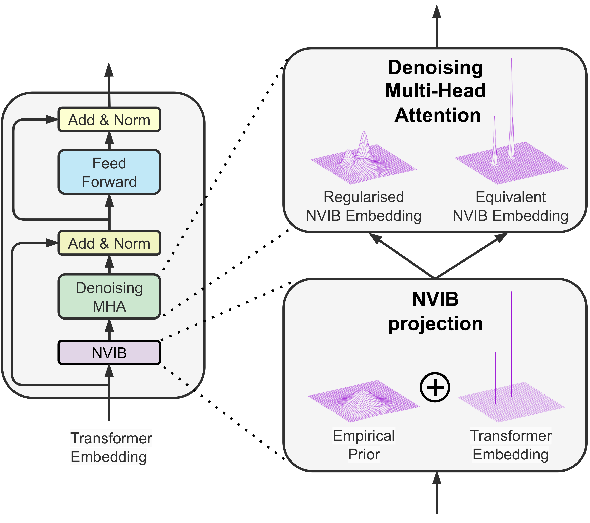

About me
Experience & Education I am a final year PhD candidate of the Electrical Engineering department at EPFL, and research assistant at Idiap Research Institute, in the Natural Language Understanding group under the supervision of Dr. James Henderson. Currently a research intern at Amazon, Berlin working in the space of retrieval augmented generation (RAG) and Large Language Models (LLMs) for code generation with Prabhu Teja and Giovanni Zappella. My PhD research involves understanding deep attention-based models and their connection with Bayesian nonparametrics for Natural Language Processing. I received both undergraduate (2018) and masters (2020) qualifications from University of Cape Town with specializations in statistics.
Personality I advocate for leadership by example. I believe that the values: honesty, humility and kindness are the ultimate form of optimisation – free to give and invaluable to receive. I am passionate and tenacious in my research and think that the progress direction is more important than the progress magnitude. My happiest state: rigorous mental stimulation, relaxing social interaction and regular outdoor exercise. For leisure, I enjoy spending time in nature: sunshine, sea and snowy mountains.
News
[August 2024]
|  | Our paper Nonparametric Variational Regularisation of Pretrained Transformers has been accepted to be presented at COLM 2024! |
[July 2024]
Starting a research internship at Amazon, Berlin. I will be working in the space of retrieval augmented generation (RAG) and Large Language Models (LLMs) for code generation with Prabhu Teja and Giovanni Zappella
[April 2024]
Reveiwing for the journal IEEE Transactions on Pattern Analysis and Machine Intelligence
[March 2024]
Presented a seminar to the Department of Statistical Sciences at the University of Cape Town. The talk was on the evolution of NLP, the attention mechanism and my PhD Research. See the slides.
[January 2024]
Reviewed for NAACL2024 as an emergency reviewer.